특수용접기능사 (2013-04-14 기출문제)
1과목: 용접일반
1. 아크용접에서 피복제 중 아크 안정제에 해당되지 않는 것은?
- 산화티탄(TiO2)
- 석회석(CaCO3)
- 규산칼륨(K2SiO2)
- 탄산바륨(BaCO3)
(정답률: 52%)

2. 가스용접으로 연강용접시 사용하는 용제는?
- 염화리튬
- 붕사
- 염화나트륨
- 사용하지 않는다.
(정답률: 66%)
3. 용접봉의 종류에서 용융금속의 이행 형식에 따른 분류가 아닌 것은?
- 단락형
- 글로뷸러형
- 스프레이형
- 직렬식 노즐형
(정답률: 86%)
4. 철분 또는 용제를 연속적으로 절단용 산소에 공급하여 그 산화열 또는 용제의 화학작용을 이용하여 절단하는 것은?
- 산소창 절단
- 스카핑
- 탄소 아크 절단
- 분말 절단
(정답률: 54%)
5. 용접봉에 아크가 한쪽으로 쏠리는 아크 쏠림 방지책이 아닌 것은?
- 짧은 아크를 사용할 것
- 접지점을 용접부로부터 멀리할 것
- 긴 용접에는 전진법으로 용접할 것
- 직류용접을 하지 말고 교류 용접을 사용할 것
(정답률: 76%)
6. 2차 무부하전압이 80V, 아크전류가 200A, 아크전압 30V, 내부손실 3KW일 때 역률(%)은?
- 48.00%
- 56.25%
- 60.00%
- 66.67%
(정답률: 60%)
7. 피복 아크 용접에서 직류 정극성(DCSP)을 사용하는 경우 모재와 용접봉의 열 분배율은?
- 모재 70%, 용접봉 30%
- 모재 30%, 용접봉 70%
- 모재 60%, 용접봉 40%
- 모재 40%, 용접봉 60%
(정답률: 82%)
8. 교류 아크 용접기에서 교류 변압기의 2차 코일에 전압이 발생하는 원리는 무슨 작용인가?
- 저항유도작용
- 전자유도작용
- 전압유도작용
- 전류유도작용
(정답률: 46%)
9. 아세틸렌가스의 자연발화온도는 몇 ℃ 정도인가?
- 250~300℃
- 300~397℃
- 406~408℃
- 700~7⑤℃
(정답률: 62%)
10. 수동가스 절단시 일반적으로 팁 끝과 강판 사이의 거리는 백심에서 몇 ㎜ 정도 유지시키는가?
- 0.1~0.5
- 1.5~2.0
- 3.0~3.5
- 5.0~7.0
(정답률: 78%)
11. 알루미늄 등의 경금속에 아르곤과 수소의 혼합가스를 사용하여 절단하는 방식인 것은?
- 분말절단
- 산소 아크 절단
- 플라즈마 절단
- 수중절단
(정답률: 52%)
12. 산소 용기의 윗부분에 각인되어 있지 않은 것은?
- 용기의 중량
- 최저 충전압력
- 내압시험 압력
- 충전가스의 내용적
(정답률: 70%)
13. 중공의 피복 용접봉과 모재 사이에 아크를 발생시키고 중심에서 산소를 분출시키면서 절단하는 방법은?
- 아크에어 가우징(arc air gouging)
- 금속 아크 절단(metal arc cutting)
- 탄소 아크 절단(carbon arc cutting)
- 산소 아크 절단(oxygen arc cutting)
(정답률: 68%)
14. 용접에서 아크가 길어질 때 발생하는 현상이 아닌 것은?
- 아크가 불안정하게 된다.
- 스패터가 심해진다.
- 산화 및 질화가 일어난다.
- 아크 전압이 감소한다.
(정답률: 75%)
15. 용접열원으로 전기가 필요 없는 용접봉은?
- 테르밋 용접
- 원자 수소 용접
- 일렉트로 슬래그 용접
- 일렉트로 가스 아크용접
(정답률: 73%)
16. 연강용 피복 아크 용접봉의 E 4316에 대한 설명 중 틀린 것은?
- E : 피복금속 아크용접봉
- 43 : 전용착금속의 최대인장강도
- 16 : 피복제의 계통
- E 4316 : 저수소계 용접봉
(정답률: 71%)
17. 용접기 설치시 1차 입력이 10KVA 이고 전원 전압이 200V이면 퓨즈 용량은?
- 50A
- 100A
- 150Q
- 200A
(정답률: 62%)
18. 특수 황동에 대한 설명으로 가장 적합한 것은?
- 주석황동 : 황동에 10%이상의 Sn을 첨가한 것
- 알루미늄 황동 : 황동에 10~15%의 Al을 첨가한 것
- 철황동 : 황동에 5% 정도의 Fe을 첨가한 것
- 니켈황동 : 황동에 7~30%의 Ni을 첨가한 것
(정답률: 51%)
19. 탄소강의 기계적 성질 변화에서 탄소량이 증가하면 어떠한 현상이 생기는가?
- 강도와 경도는 감소하나 인성 및 충격값 연신율, 단면 수축율은 증가한다.
- 강도와 경도가 감소하고 인성 및 충격값 연신율, 단면 수축율도 감소한다.
- 강도와 경도가 증가하고 인성 및 충격값 연신율, 단면 수축률도 증가한다.
- 강도와 경도는 증가하나 인성 및 충격값 연신율, 단면 수축율은 감소한다.
(정답률: 72%)
20. 스테인리스강을 불활성가스 금속아크 용접법으로 용접시 장점이 아닌 것은?
- 아크 열 집중성보다 확장성이 좋다.
- 어떤 방향으로도 용접이 가능하다.
- 용접이 고속도로 아크 방향으로 방사된다.
- 합금원소가 98%이상으로 거의 전부가 용착금속에 옮겨진다.
(정답률: 45%)
21. 연강에 비해 고장력강의 장점이 아닌 것은?
- 소요 강재의 중량을 상당히 경감시킨다.
- 재료의 취급이 간단하고 가공이 용이하다.
- 구조물의 하중을 경감시킬 수 있어 그 기초공사가 단단해진다.
- 동일한 강도에서 판의 두께를 두껍게 할 수 있다.
(정답률: 57%)
22. 일반적으로 중금속과 경금속을 구분하는 비중은?
- 1.0
- 3.0
- 5.0
- 7.0
(정답률: 60%)
23. 가단주철의 종류가 아닌 것은?
- 산화가단 주철
- 백심가단 주철
- 흑심가단 주철
- 펄라이트 가단주철
(정답률: 56%)
24. 침탄법의 종류에 속하지 않는 것은?
- 고체 침탄법
- 증기 침탄법
- 가스 침탄법
- 액체 침탄법
(정답률: 76%)
25. 재료의 잔류 응력을 제거하기 위해 적당한 온도와 시간을 유지한 후 냉각하는 방식으로 일명 저온 풀림이라고 하는 것은?
- 재결정 풀림
- 확산풀림
- 응력제거 풀림
- 중간 풀림
(정답률: 83%)
26. Mg-Al 계 합금에 소량의 Zn, Mn을 첨가한 마그네슘 합금은?
- 다우메탈
- 일렉트론 합금
- 하이드로날륨
- 라우탈 합금
(정답률: 37%)
27. 알루미늄 합금으로 강도를 높이기 위해 구리, 마그네슘 등을 첨가하여 열처리 후 사용하는 것으로 교량, 항공기 등에 사용하는 것은?
- 주조용 알루미늄 합금
- 내열 알루미늄 합금
- 내식 알루미늄 합금
- 고강도 알루미늄 합금
(정답률: 73%)
28. 금속표면이 녹슬거나 산화물질로 변화되어가는 금속의 부식현상을 개선하기 위해 이용되는 강은?
- 내식강
- 내열강
- 쾌삭강
- 불변강
(정답률: 66%)
29. 높은 곳에서 용접작업시 지켜야 할 사항으로 틀린 것은?
- 족장이나 발판이 견고하게 조립되어 있는지 확인한다.
- 고소작업 시 착용하는 안전모의 내부 수직거리는 10mm 이내로 한다.
- 주변에 낙하물건 및 작업위치 아래에 인화성 물질이 없는지 확인한다.
- 고소작업장에서 용접작업시 안전벨트 착용 후 안전로프를 핸드레일에 고정시킨다.
(정답률: 91%)
30. 자분탐상 검사에서 검사물체를 자화하는 방법으로 사용되는 자화전류로서 내부결함의 검출에 적합한 것은?
- 교류
- 자력선
- 직류
- 교류나 직류 상관없다.
(정답률: 42%)
31. 용접순서의 결정시 가능한 변형이나 잔류응력의 누적을 피할 수 있도록 하기 위한 유의사항으로 잘못된 것은?
- 용접물의 중심에 대하여 항상 대칭으로 용접을 해 나간다.
- 수축이 적은 이음을 먼저 용접하고 수축이 큰 이음은 나중에 용접한다.
- 용접물이 조립되어 감에 따라 용접작업이 불가능한 곳이나 곤란한 경우가 생기지 않도록 한다.
- 용접물의 중립축을 참작하여 그 중립축에 대한 용접 수축력의 모멘트의 합이 “0”이 되게 하면 용접선 방향에 대한 굽힘이 없어진다.
(정답률: 78%)
32. 용접부의 시험 및 검사의 분류에서 크리프 시험은 무슨 시험에 속하는가?(오류 신고가 접수된 문제입니다. 반드시 정답과 해설을 확인하시기 바랍니다.)
- 물리적 시험
- 기계적 시험
- 금속학적 시험
- 화학적 시험
(정답률: 48%)
33. 납땜 용제의 구비조건으로 맞지 않는 것은?
- 침지땜에 사용되는 것은 수분을 함유할 것
- 청정한 금속면의 산화를 방지할 것
- 전기저항 납땜에 사용되는 것은 전도체일 것
- 모재나 땜납에 대한부식자용이 최소한일 것
(정답률: 76%)
34. TIG 용접에서 사용되는 텅스텐 전극에 관한 설명으로 옳은 것은?
- 토륨을 1~2% 함유한 텅스텐 전극은 순 텅스텐 전극에 비해 전자 방사 능력이 떨어진다.
- 토륨을 1~2% 함유한 텅스텐 전극은 저 전류에서도 아크 발생이 용이하다.
- 직류 역극성은 직류 정극성에 비해 전극의 소모가 적다.
- 순 텅스텐 전극은 온도가 높으므로 용접 중 모재나 용접봉과 접촉되었을 경우에도 오염되지 않는다.
(정답률: 66%)
35. 자동 아크 용접법 중의 하나로서 그림과 같은 원리로 이루어지는 용접법은?
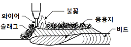
- 전자빔 용접
- 서브머지드 아크용접
- 테르밋 용접
- 불활성 가스 아크용접
(정답률: 72%)
2과목: 용접재료
36. 전기용접 작업의 안전사항 중 전격방지 대책이 아닌 것은?
- 용접기 내부는 수시로 분해수리하고 청소를 하여야 한다.
- 절연 홀더의 절연부분이 노출되거나 파손되면 교체한다.
- 장시간 작업을 하지 않을 시는 반드시 전기 스위치를 차단한다.
- 젖은 작업복이나 장갑, 신발 등을 착용하지 않는다.
(정답률: 90%)
37. 다음은 잔류응력의 영향에 대한 설명이다. 가장 옳지 않은 것은?
- 재료의 연성이 어느 정도 존재하면 부재의 정적강도에는 잔류응력이 크게 영향을 미치지 않는다.
- 일반적으로 하중방향의 인장 잔류응력은 피로강도에 무관하며 압축 잔류응력은 피로강도에 취약한 것으로 생각된다.
- 용접부 부근에는 항상 항복점에 가까운 잔류응력이 존재하므로 외부하중에 의한 근소한 응력이 가산되어도 취성파괴가 일어날 가능성이 있다.
- 잔류응력이 존재하는 상태에서 고온으로 수개월 이상 방치하면 거의 소성변형이 일어나지 않고 균열이 발생하여 파괴하는데 이것을 시즌 크랙(season crack)이라 한다.
(정답률: 44%)
38. 아크를 발생시키지 않고 와이어와 용융 슬래그 모재내에 흐르는 전기 저항열에 의하여 용접하는 방법은?
- TIG 용접
- MIG 용접
- 일렉트로 슬래그 용접
- 이산화탄소 아크 용접
(정답률: 80%)
39. 탄산가스 아크 용접의 종류에 해당되지 않는 것은?
- NCG법
- 테르밋 아크법
- 유니어 아크법
- 퓨즈 아크법
(정답률: 64%)
40. 맞대기 용접에서 용접기호는 기준선에 대하여 90도의 평행선을 그리어 나타내며 주로 얇은 판에 많이 사용되는 홈 용접은?
- V형 용접
- H형 용접
- X형 용접
- I형 용접
(정답률: 75%)
41. 원자수소 용접에 사용되는 전극은?
- 구리 전극
- 알루미늄 전극
- 텅스텐 전극
- 니켈 전극
(정답률: 57%)
42. 필릿 용접에서 루트 간격이 1.5㎜ 이하일 때 보수용접 요령으로 가장 적합한 것은?
- 다리길이를 3배수로 증가시켜 용접한다.
- 그대로 용접하여도 좋으나 넓혀진 만큼 다리길이를 증가시킬 필요가 있다.
- 그대로 규정된 다리 길이로 용접한다.
- 라이너를 넣든지 부족한 판을 300㎜ 이상 잘라내서 대체한다.
(정답률: 53%)
43. TIG 용접용 텅스텐 전극봉의 전류 전달능력에 영향을 미치는 요인이 아닌 것은?
- 사용전원 극성
- 전극봉의 돌출길이
- 용접기 종류
- 전극봉 홀더 냉각효과
(정답률: 51%)
44. CO2 가스 아크 편면용접에서 이면 비드의 형성은 물론 뒷면 가우징 및 뒷면 용접을 생략할 수 있고 모재의 중량에 따른 뒤엎기(turn over) 작업을 생략할 수 있도록 홈 용접부 이면에 부착하는 것은?
- 포지셔너
- 스캘럽
- 엔드탭
- 뒷댐재
(정답률: 66%)
45. 다음 중 불활성 가스 텅스텐 아크 용접에 사용되는 전극봉이 아닌 것은?
- 티타늄 전극봉
- 순 텅스텐 전극봉
- 토륨 텅스텐 전극봉
- 산화란탄 텅스텐 전극봉
(정답률: 58%)
46. MIG 용접용의 전류밀도는 TIG용접의 약 몇 배 정도인가?
- 2
- 4
- 6
- 8
(정답률: 64%)
47. 아크를 보호하고 집중시키기 위하여 내열성의 도기로 만든 페룰(ferrule)이라는 기구를 사용하는 용접은?
- 스터드 용접
- 테르밋 용접
- 전자빔 용접
- 플라스마 용접
(정답률: 67%)
48. 용접 전류가 용접하기에 적합한 전류보다 높을 때 가장 발생되기 쉬운 용접 결함은?
- 용입불량
- 언더컷
- 오버랩
- 슬래그 섞임
(정답률: 77%)
49. 잔류응력의 경감 방법 중 노내 풀림법에서 응력제거 풀림에 대한 설명으로 가장 적합한 것은?
- 유지온도가 높을수록 또 유지시간이 길수록 효과가 크다.
- 유지온도가 낮을수록 또 유지시간이 짧을수록 효과가 크다.
- 유지온도가 높을수록 또 유지시간이 짧을수록 효과가 크다.
- 유지온도가 낮을수록 또 유지시간이 길수록 효과가 크다.
(정답률: 57%)
50. 재해와 숙련도 관계에서 사고가 가장 많이 발생하는 근로자는?
- 경험이 1년 미만인 근로자
- 경험이 3년인 근로자
- 경험이 5년인 근로자
- 경험이 10년이 근로자
(정답률: 86%)
3과목: 기계제도
51. 기계제도 치수 기입법에서 참고 치수를 의미하는 것은?
- 50
- 50
- (50)
- ≪50≫
(정답률: 85%)
52. 다음은 제3각법의 정투상도로 나타낸 정면도와 우측면도이다. 평면도로 가장 적합한 것은?
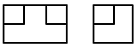
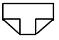
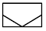
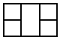
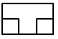
(정답률: 84%)
53. 구의 지름을 나타낼 때 사용되는 치수 보조기호는?
- Φ
- S
- SΦ
- SR
(정답률: 60%)
54. 그림과 같은 배관접합(연결)기호의 설명으로 옳은 것은?
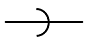
- 마개와 소켓 연결
- 플랜지 연결
- 칼라 연결
- 유니언 연결
(정답률: 48%)
55. 물체의 일부분을 파단한 경계 또는 일부를 떼어낸 경계를 나타내는 선으로 불규칙한 파형의 가는 실선인 것은?
- 파단선
- 지시선
- 가상선
- 절단선
(정답률: 80%)
56. 기계 재료의 종류 기호 “SM 400A" 가 뜻하는 것은?
- 일반 구조용 압연 강재
- 기계 구조용 압연 강재
- 용접 구조용 압연 강재
- 자동차 구조용 열간 압연 강판
(정답률: 55%)
57. 구멍에 끼워 맞추기 위한 구멍, 볼트, 리벳의 기호 표시에서 양쪽 면에 카운터 싱크가 있고 현장에서 드릴가공 및 끼워 맞춤을 하는 것은?
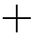
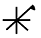
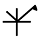
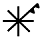
(정답률: 70%)
58. 다음 투상도 중 1각법이나 3각법으로 투상하여도 정면도를 기준으로 그 위치가 동일한 곳에 있는 것은?
- 우측면도
- 평면도
- 배면도
- 저면도
(정답률: 51%)
59. 그림과 같은 용접 도시 기호를 올바르게 설명한 것은?
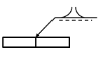
- 돌출된 모서리를 가진 평판 사이의 맞대기 용접이다.
- 평행(I형) 맞대기 용접이다.
- U형 이음으로 맞대기 용접이다.
- J형 이음으로 맞대기 용접이다.
(정답률: 58%)
60. 다음 도면에 관한 설명으로 틀린 것은? (단, 도면의 등변 ㄱ 형강 길이는 160㎜이다.)
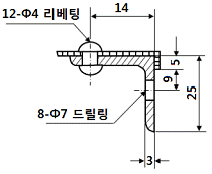
- 등변 ㄱ 형강의 호칭은 L 25×25×3-160이다.
- Φ4 리벳의 개수는 알 수 없다.
- Φ7 구멍의 개수는 8개이다.
- 리벳팅의 위치는 치수가 14㎜인 위치에 있다.
(정답률: 74%)